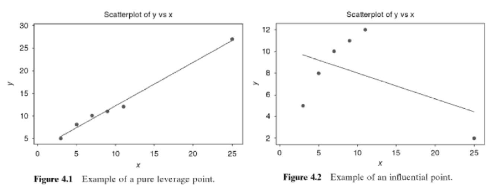

Definition of Residuals
We previously learned that residuals are defined as:
\[
e_i = y_i - \hat{y_i}, \space i=1,2,...,n
\]
However there are a few other constructive ways to view the residuals:
- deviation between observed data and the fitted values
- unexplained variability in the response variable from the model
- realized or observed values of \(\epsilon_i\)
The residuals have several important properties:
- Zero mean or \(\sum_{i=1}^n e_i =0\)
- Approximate variance:
\[
\frac{\sum_{i=1}^n (e_i - \overline{e_i})^2}{n-p} = \frac{\sum_{i=1}^n e_i^2}{n-p} = \frac{SS_{Res}}{n-p} = MS_{Res} = \hat{\sigma}^2
\]
where \(p=\) # of parameters
- Unlike \(\epsilon_i\), \(e_i\) are not independent:
- \(n\) residuals have only \(n-p\) degrees of freedom
Scaled Residuals: Helpful in finding outliers, the unusual or extreme points that are considerably different from other data points in \(y\) or \(x\) directions
Variance-Covariance of Residuals
Remember our definition of the Hat Matrix:
\[
\mathbf{H} = \mathbf{X} ( \mathbf{X^\intercal} \mathbf{X})^{-1} \mathbf{X^\intercal}
\]
The Hat Matrix has the following properties:
- \(\mathbf{H}\) is symmetric and idempotent
- \(\mathbf{I-H}\) is symmetric and idempotent
Also remember that we can show residuals in matrix notation as:
\[
\mathbf{e} = \mathbf{y}-\mathbf{\hat{y}} = \mathbf{y} - \mathbf{X\hat{\beta}}=\mathbf{y}-\mathbf{Hy}=(\mathbf{I}-\mathbf{H})\mathbf{y}
\]
We can take that last equation, properties of the Hat matrix and substituting \(\mathbf{y=X\beta+\epsilon}\) into:
\[
\begin{align*}
\mathbf{e} &= (\mathbf{I}-\mathbf{H})(\mathbf{X\beta+\epsilon})\\
&= \mathbf{X\beta}-\mathbf{HX\beta}+(\mathbf{I-H})\mathbf{\epsilon}\\
&= \mathbf{X\beta}-\mathbf{\mathbf{X} ( \mathbf{X^\intercal} \mathbf{X})^{-1} \mathbf{X^\intercal}}\mathbf{X\beta}+(\mathbf{I-H})\mathbf{\epsilon}\\
&= \mathbf{X\beta}-\mathbf{\mathbf{X} [( \mathbf{X^\intercal} \mathbf{X})^{-1} \mathbf{X^\intercal}}\mathbf{X}]\mathbf{\beta}+(\mathbf{I-H})\mathbf{\epsilon}\\
&= \mathbf{X\beta}-\mathbf{X} \mathbf{\beta}+(\mathbf{I-H})\mathbf{\epsilon}\\
&=(\mathbf{I-H})\mathbf{\epsilon}\\
\end{align*}\\
\]
Therefore we see that the residuals are the same linear transformation of the observations \(\mathbf{y}\) and the errors \(\mathbf{\epsilon}\), or in mathematical terms:
- \(\mathbf{e}=(\mathbf{I} - \mathbf{H})\mathbf{y}\)
- \(\mathbf{e}=(\mathbf{I} - \mathbf{H})\mathbf{\epsilon}\)
Using the second equation we can find the variance of \(\mathbf{e}\)
\[
\begin{align*}
Var(\mathbf{e}) &= Var[(\mathbf{I} - \mathbf{H})\mathbf{\epsilon}]\\
\end{align*}
\]
And leveraging the variance of matrices property:
\[
Var(\mathbf{A}\mathbf{X}) = \mathbf{A}(Var(\mathbf{X}))\mathbf{A^\intercal}
\]
Where:
- \(\mathbf{X} \in \mathbb{R}^{\ell \times 1}\) is a random column vector
- \(\mathbf{A} \in \mathbb{R}^{k \times \ell}\) is a constant matrix
So back to our variance:
\[
\begin{align*}
Var(\mathbf{e}) &= Var[(\mathbf{I} - \mathbf{H})\mathbf{\epsilon}]\\
&= (\mathbf{I} - \mathbf{H}) Var(\mathbf{\epsilon}) (\mathbf{I} - \mathbf{H}) ^\intercal\\
&= \sigma^2 (\mathbf{I} - \mathbf{H})
\end{align*}
\]
Since the \(Var(\mathbf{\epsilon})=\sigma^2 \mathbf{I}\) and \(\mathbf{I}-\mathbf{H}\) is symmetric and idempotent. The matrix \(\mathbf{I}-\mathbf{H}\) is generally not diagonal, so the residuals have different variances and they are correlated:
\(Var(e_i) = \sigma^2(1-h_{ii})\), where \(h_{ii}\) is the \(i\)-th diagonal element of \(\mathbf{H}\)
\(Cov(e_i,e_j) = -\sigma^2h_{ij}\), where \(h_{ij}\) is the \(ij\)-th diagonal element of \(\mathbf{H}\)
\(h_{ii} \in [0,1]\) measures the location of the \(i\)-th point in \(\mathbf{x}\) space
- the smaller \(h_{ii}\) is:
- The larger the \(Var(e_i)\)
- The closer the point \(\mathbf{x_i}\) lies to the centroid of the \(\mathbf{X}\) space
- The larger \(h_{ii}\) is:
- The smaller the \(Var(e_i)\)
- \(MS_{res}>MS_{res}(1-h_{ii})\) overestimates \(Var(e_i)\)
Leverage Points and Influential Points
- Leverage Point - Leverage points are observations made at extreme values of the independent variables; the lack of neighboring observations means that the fitted regression model will pass close to that particular observation.
- Influential Point - Influential observations are those observations that have a relatively large effect on the regression model’s predictions
- Drags the prediction to itself
- Remote point with large \(h_{ii}\) may be influential
- Leverage vs. Influential - An influential point will typically have high leverage; however a high leverage point is not necessarily an influential point.
Influential Points - Mathematical Insights
- Let \(y_n\) be the observed response for the \(n^{th}\) data point
- Let \(\hat{y}_n^*\) be predicted value for response based on other n-1 data points
- Let \(\delta = y_n - \hat{y}_n^*\) or the difference between actual observed value vs. predicted value from “other” observations.

Model Adequacy Checking - Introduction to Linear Regression Analysis - 5th addition - Montgomery/Peck/Vining
Using the an image from Introduction to Linear Regression Analysis by Montgomery/Peck/Vining
For \(x=25\):
- Figure 1: \(\hat{y}_n^* = 25\) predicted value based on other points
- Figure 2: \(y_n=2\) actual value
- \(\delta = y_n - \hat{y}_n^*\) is -23: showing very influential point
Furthermore if the \(n^{th}\) data point is remote in terms of the space devined by data values for regressors, then \(h_{nn}\) approaches 1 and \(\hat{y}_n\) approaches \(y_n\)
\[
\begin{align*}
\hat{y}_n&=\hat{y}_n^* + h_{nn}\delta\\
&=\hat{y}_n^* + \left [ \frac{1}{n} + \left ( \frac{n-1}{n} \right )^2 \frac{(x_n-\overline{x}^*)^2}{S_{xx}} \right ]\delta\\
\end{align*}
\]
Let \(\overline{x}^*\) be the average value for the other \(n\)-1 regressors.
Studentized Residuals
A logical next step is to produce a residual with constant variance:
\[
r_i = \frac{e_i}{\sqrt{MS_{res}(1-h_{ii})}}
\]
- \(r_i\)s have mean zero and unit variance, regardless of the location of \(\mathbf{x_i}\) when the model form is correct
- Larger than \(d_i\)
- When \(n\) is large, standardized \(d_i\) and studentized \(r_i\) are similar
Practice: If there is only one regressor, show that studentized residuals are:
\[
r_i = \frac{e_i}
{\sqrt{MS_{res} \left [ 1- \left ( \frac{1}{n} + \frac{(x_i - \overline{x})^2}{S_{xx}} \right ) \right ] } }
\]
PRESS Residuals
Another alternative is to find \(\hat{y}_{(i)}\): the fitted value of \(y_i\) based on a model with all observations except \(y_i\)
Define the prediction residual as:
\[
e_{(i)}=y_i - \hat{y}_{(i)}
\]
Motivation:
- If the \(i\)-th point \((\mathbf{x_i}, y_i)\) is unusual it can “overly” influence the regression model
- If the point in question is used then \(y_i \approx \hat{y}_{(i)}\) and it’s hard to detect an outlier
- If the point in question is not used then \(\hat{y}_{(i)}\) cannot be influenced by it, and the residual will better reflect how unusual the point is
Practice: It can be shown
\[
e_{(i)} = \frac{e_i}{1-h_{ii}}, \space i=1,2,\dots,n
\]
- When \(h_{ii}\) is large, the PRESS residual is large, or the difference between \(e_i\) and \(e_{(i)} is large\)
- These points will generally be high influence points
- \((\mathbf{x_i},y_i)\) is a point where the model fits the data well, but a model built without the point predicts poorly
The Sum of Squares becomes:
(i.e. PRediction Eror Sum of Squares (PRESS)):
\[
\sum_{i=1}^n e_i = \sum_{i=1}^n \left ( y_i - \hat{y}_{(i)} \right )^2
\]
Standardized PRESS Residuals
The variance of the \(i\)th PRESS residual is:
\[
Var[e_{(i)}]=Var \left [ \frac{e_i}{1-h_{ii}} \right ] = \frac{\sigma^2}{1-h_{ii}}
\]
so that a standardized PRESS residual is:
\[
\frac{e_{(i)}}{\sqrt{Var(e_{(i)}})} = \frac{e_{i}/(1-h_{ii})}{\sqrt{\sigma^2/(1 - h_{ii})}} = \frac{e_{i}}{\sqrt{\sigma^2(1 - h_{ii})}}
\]
which, if we use \(MS_{Res}\) to estimate \(\sigma^2\), is just the studentized residual discussed previously.
PRESS Statistic
Sum of squared PRESS residuals, as a measure of model quality:
\[
\begin{align*}
PRESS &= \sum_{i=1}^n [y_i - \hat{y_{(i)}}]^2\\
&= \sum_{i=1}^n \left ( \frac{e_i}{1 - h_{ii}} \right )^2
\end{align*}
\]
Residual Plots
Normal probability (QQ-plot) of residuals:
- \(t_{test}\), \(F_{test}\), CI and PI all depend on normality assumptions
- Heavy tailed error distributions often generate outliers that “pull” the LS fit too much in their direction
Plot \(e_i\) vs. fitted values \(\hat{y}_i\)
* Check for nonconstant variance
* Check for nonlinearity
* Look for outliers
* We plot \(e_i\) vs. fitted values \(\hat{y}_i\) as \(e_i\) and \(y_i\) are usually correlated
Why?
Other Residual Plots
\(e_i\) vs. \(x_j\)
- Similar to \(e_i\) to \(\hat{y}_i\)
- Not always effective revealing whether a transformation is required
Partial Regression Plot
- Study marginal effect of a \(x_j\) given all others in the model
- Evaluate whether we specified the relationship between \(y\) and \(x_j\) correctly
Partial Regression Plot - How
- Regress \(y\) on all regressors except \(x_j\) and obtain residuals
\[
\begin{align*}
\hat{y}_i(x_{(j)})&= b_0 + b_1 x_{i1} + \dots + b_{j-1}x_{i,j-1} + b_{j+1}x_{i,j+1} + \dots + b_{k}x_{ik}\\
e_i(y|x_{(j)})&= y_i - \hat{y}_{i}(x_{(j)})
\end{align*}
\]
- Regress \(x_j\) on all other predictors and obtain residuals
\[
\begin{align*}
\hat{x}_j(x_{(j)})&= a_0 + a_1 x_{i1} + \dots + a_{j-1}x_{i,j-1} + a_{j+1}x_{i,j+1} + \dots + a_{k}x_{ik}\\
e_i(x_j|x_{(j)}) &= x_{ij} - \hat{x}_{ij}(x_{(j)})
\end{align*}
\]
- Plot \(e_i(y|x_{(j)})\) vs. \(e_i(x_j|x_{(j)})\)
- If the plot of \(e_i(y|x_{(j)})\) vs. \(e_i(x_j|x_{(j)})\) is linear, then a linear relationship between \(y\) and \(x_j\) seems reasonable
- The slope of the line will be the regression coefficient of \(x_j\) in an MLR model
- If the plot is curvilinear, we may need some transformation such as \(x_j^2\) or \(1/x_j\)
- If \(x_j\) is a candidate variable, a horizontal band indicates there is no additional useful information in \(x_j\) for predicting \(y\)